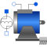
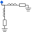

SM_ElectricalExcitedElectrical excited synchronous induction machine with damper cage |

|
Diagram
{kind=link}
Information
This information is part of the Modelica Standard Library maintained by the Modelica Association.
Model of a three phase electrical excited synchronous induction machine with damper cage.
Resistance and stray inductance of stator is modeled directly in stator phases, then using space phasor transformation and a rotor-fixed AirGap model. Resistance and stray inductance of rotor's squirrel cage is modeled in two axis of the rotor-fixed coordinate system. Electrical excitation is modelled by converting excitation current and voltage to d-axis space phasors. The machine models take the following loss effects into account:
- heat losses in the temperature dependent stator winding resistances
- heat losses in the temperature dependent excitation winding resistance
- optional, when enabled: heat losses in the temperature dependent damper cage resistances
- brush losses in the excitation circuit
- friction losses
- core losses (only eddy current losses, no hysteresis losses)
- stray load losses
Whether a damper cage is present or not, can be selected with Boolean parameter useDamperCage (default = true).
Default values for machine's parameters (a realistic example) are:
| number of pole pairs p | 2 | |
| stator's moment of inertia | 0.29 | kg.m2 |
| rotor's moment of inertia | 0.29 | kg.m2 |
| nominal frequency fNominal | 50 | Hz |
| nominal voltage per phase | 100 | V RMS |
| no-load excitation current @ nominal voltage and frequency |
10 | A DC |
| warm excitation resistance | 2.5 | Ohm |
| nominal current per phase | 100 | A RMS |
| nominal apparent power | -30000 | VA |
| power factor | -1.0 | ind./cap. |
| nominal excitation current | 19 | A |
| efficiency w/o excitation | 97.1 | % |
| nominal torque | -196.7 | Nm |
| nominal speed | 1500 | rpm |
| nominal rotor angle | -57.23 | degree |
| stator resistance | 0.03 | Ohm per phase at reference temperature |
| reference temperature TsRef | 20 | °C |
| temperature coefficient alpha20s | 0 | 1/K |
| stator reactance Xd | 1.6 | Ohm per phase in d-axis |
| giving Kc | 0.625 | |
| stator reactance Xq | 1.6 | Ohm per phase in q-axis |
| stator stray reactance Xss | 0.1 | Ohm per phase |
| damper resistance in d-axis | 0.04 | Ohm at reference temperature |
| damper resistance in q-axis | same as d-axis | |
| reference temperature TrRef | 20 | °C |
| temperature coefficient alpha20r | 0 | 1/K |
| damper stray reactance in d-axis XDds | 0.05 | Ohm |
| damper stray reactance in q-axis XDqs | same as d-axis | |
| excitation resistance | 2.5 | Ohm at reference temperature |
| reference temperature TeRef | 20 | °C |
| temperature coefficient alpha20e | 0 | 1/K |
| excitation stray inductance | 2.5 | % of total excitation inductance |
| stator operational temperature TsOperational | 20 | °C |
| damper operational temperature TrOperational | 20 | °C |
| excitation operational temperature TeOperational | 20 | °C |
| These values give the following inductances: | ||
| main field inductance in d-axis | (Xd - Xss)/(2*pi*fNominal) | |
| main field inductance in q-axis | (Xq - Xss)/(2*pi*fNominal) | |
| stator stray inductance per phase | Xss/(2*pi*fNominal) | |
| damper stray inductance in d-axis | XDds/(2*pi*fNominal) | |
| damper stray inductance in q-axis | XDqs/(2*pi*fNominal) |
Parameters (33)
| Jr |
Value: Type: Inertia (kg·m²) Description: Rotor's moment of inertia |
|---|---|
| useSupport |
Value: false Type: Boolean Description: Enable / disable (=fixed stator) support |
| Js |
Value: Jr Type: Inertia (kg·m²) Description: Stator's moment of inertia |
| useThermalPort |
Value: false Type: Boolean Description: Enable / disable (=fixed temperatures) thermal port |
| frictionParameters |
Value: Type: FrictionParameters Description: Friction loss parameter record |
| p |
Value: Type: Integer Description: Number of pole pairs (Integer) |
| fsNominal |
Value: Type: Frequency (Hz) Description: Nominal frequency |
| TsOperational |
Value: Type: Temperature (K) Description: Operational temperature of stator resistance |
| Rs |
Value: Type: Resistance (Ω) Description: Stator resistance per phase at TRef |
| TsRef |
Value: Type: Temperature (K) Description: Reference temperature of stator resistance |
| alpha20s |
Value: Type: LinearTemperatureCoefficient20 (¹/K) Description: Temperature coefficient of stator resistance at 20 degC |
| Lszero |
Value: Lssigma Type: Inductance (H) Description: Stator zero sequence inductance |
| Lssigma |
Value: Type: Inductance (H) Description: Stator stray inductance per phase |
| statorCoreParameters |
Value: Type: CoreParameters Description: Stator core loss parameter record; all parameters refer to stator side |
| strayLoadParameters |
Value: Type: StrayLoadParameters Description: Stray load loss parameter record |
| TrOperational |
Value: Type: Temperature (K) Description: Operational temperature of (optional) damper cage |
| Lmd |
Value: Type: Inductance (H) Description: Stator main field inductance per phase in d-axis |
| Lmq |
Value: Type: Inductance (H) Description: Stator main field inductance per phase in q-axis |
| useDamperCage |
Value: Type: Boolean Description: Enable / disable damper cage |
| Lrsigmad |
Value: Type: Inductance (H) Description: Damper stray inductance in d-axis |
| Lrsigmaq |
Value: Lrsigmad Type: Inductance (H) Description: Damper stray inductance in q-axis |
| Rrd |
Value: Type: Resistance (Ω) Description: Damper resistance in d-axis at TRef |
| Rrq |
Value: Rrd Type: Resistance (Ω) Description: Damper resistance in q-axis at TRef |
| TrRef |
Value: Type: Temperature (K) Description: Reference temperature of damper resistances in d- and q-axis |
| alpha20r |
Value: Type: LinearTemperatureCoefficient20 (¹/K) Description: Temperature coefficient of damper resistances in d- and q-axis |
| VsNominal |
Value: Type: Voltage (V) Description: Nominal stator RMS voltage per phase |
| IeOpenCircuit |
Value: Type: Current (A) Description: Open circuit excitation current @ nominal voltage and frequency |
| Re |
Value: Type: Resistance (Ω) Description: Excitation resistance at TRef |
| TeRef |
Value: Type: Temperature (K) Description: Reference temperature of excitation resistance |
| alpha20e |
Value: Type: LinearTemperatureCoefficient20 (¹/K) Description: Temperature coefficient of excitation resistance |
| sigmae |
Value: Type: Real Description: Stray fraction of total excitation inductance |
| TeOperational |
Value: Type: Temperature (K) Description: Operational excitation temperature |
| brushParameters |
Value: Type: BrushParameters Description: Brush loss parameter record |
Inputs (4)
| idq_ss |
Default Value: airGapR.i_ss Type: Current[2] (A) Description: Stator space phasor current / stator fixed frame |
|---|---|
| idq_sr |
Default Value: airGapR.i_sr Type: Current[2] (A) Description: Stator space phasor current / rotor fixed frame |
| idq_rs |
Default Value: airGapR.i_rs Type: Current[2] (A) Description: Rotor space phasor current / stator fixed frame |
| idq_rr |
Default Value: airGapR.i_rr Type: Current[2] (A) Description: Rotor space phasor current / rotor fixed frame |
Outputs (10)
| phiMechanical |
Default Value: flange.phi - internalSupport.phi Type: Angle (rad) Description: Mechanical angle of rotor against stator |
|---|---|
| wMechanical |
Default Value: der(phiMechanical) Type: AngularVelocity (rad/s) Description: Mechanical angular velocity of rotor against stator |
| tauElectrical |
Default Value: inertiaRotor.flange_a.tau Type: Torque (N·m) Description: Electromagnetic torque |
| tauShaft |
Default Value: -flange.tau Type: Torque (N·m) Description: Shaft torque |
| powerBalance |
Type: PowerBalanceSMEE Description: Power balance |
| vs |
Default Value: plug_sp.pin.v - plug_sn.pin.v Type: Voltage[m] (V) Description: Stator instantaneous voltages |
| is |
Default Value: plug_sp.pin.i Type: Current[m] (A) Description: Stator instantaneous currents |
| i_0_s |
Default Value: spacePhasorS.zero.i Type: Current (A) Description: Stator zero-sequence current |
| ve |
Default Value: pin_ep.v - pin_en.v Type: Voltage (V) Description: Excitation voltage |
| ie |
Default Value: pin_ep.i Type: Current (A) Description: Excitation current |
Connectors (9)
| flange |
Type: Flange_a Description: Shaft |
|
|---|---|---|
| support |
Type: Flange_a Description: Support at which the reaction torque is acting |
|
| plug_sp |
Type: PositivePlug Description: Positive stator plug |
|
| plug_sn |
Type: NegativePlug Description: Negative stator plug |
|
| thermalPort |
Type: ThermalPortSMEE |
|
| ir |
Type: RealOutput[2] Description: Damper cage currents |
|
| idq_dr |
Type: RealOutput[2] Description: Damper space phasor current / rotor fixed frame |
|
| pin_ep |
Type: PositivePin Description: Positive excitation pin |
|
| pin_en |
Type: NegativePin Description: Negative excitation pin |
Components (22)
| frictionParameters |
Type: FrictionParameters Description: Friction loss parameter record |
|
|---|---|---|
| inertiaRotor |
Type: Inertia |
|
| inertiaStator |
Type: Inertia |
|
| fixed |
Type: Fixed |
|
| friction |
Type: Friction |
|
| statorCoreParameters |
Type: CoreParameters Description: Stator core loss parameter record; all parameters refer to stator side |
|
| strayLoadParameters |
Type: StrayLoadParameters Description: Stray load loss parameter record |
|
| powerBalance |
Type: PowerBalanceSMEE Description: Power balance |
|
| rs |
Type: Resistor |
|
| lssigma |
Type: Inductor |
|
| lszero |
Type: Inductor |
|
| statorCore |
Type: Core |
|
| spacePhasorS |
Type: SpacePhasor |
|
| strayLoad |
Type: StrayLoad |
|
| thermalAmbient |
Type: ThermalAmbientSMEE |
|
| airGapR |
Type: AirGapR |
|
| brushParameters |
Type: BrushParameters Description: Brush loss parameter record |
|
|  | damperCage |
Type: DamperCage |
| electricalExcitation |
Type: ElectricalExcitation |
|
| re |
Type: Resistor |
|
| lesigma |
Type: Inductor |
|
| brush |
Type: Brush |
Used in Examples (5)
|
Modelica.Electrical.Machines.Examples.SynchronousInductionMachines Test example: ElectricalExcitedSynchronousInductionMachine starting direct on line |
|
|
Modelica.Electrical.Machines.Examples.SynchronousInductionMachines Test example: ElectricalExcitedSynchronousInductionMachine as Generator |
|
|
Modelica.Electrical.Machines.Examples.SynchronousInductionMachines Test example: ElectricalExcitedSynchronousInductionMachine with voltage controller |
|
|
Modelica.Electrical.Machines.Examples.SynchronousInductionMachines Test example: ElectricalExcitedSynchronousInductionMachine with rectifier |
|
|
Modelica.Magnetic.FundamentalWave.Examples.BasicMachines Electrical excited synchronous machine operating as generator |